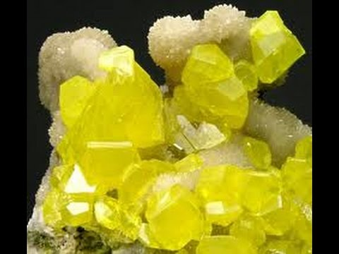

Del desus. altano 'en alto', 'altivamente' y -ero.
adj. Altivo, soberbio.
adj. Dicho de un halcón o de otra ave de rapiña: De alto vuelo.

azufre
Del lat. sulphur, -ŭris.
m.Elemento químico de núm. atóm. 16, frágil, de color amarillo y olor intenso característico, muy abundante en la corteza terrestre, donde se encuentra nativo o en forma de sulfuros como la pirita o de sulfatos como el yeso, y que tiene usos industriales y farmacéuticos. (Símb. S).